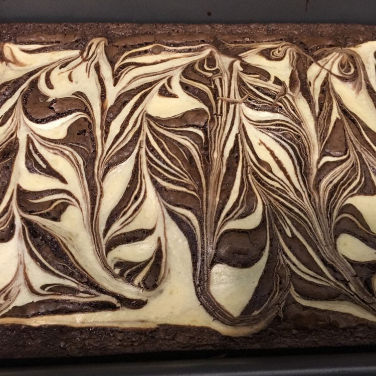

Home
Brownies

Description of this Recipe
These rich marble brownies are a quick and easy dessert with your favorite brownie mix. Chocolate brownie batter is mixed with a sweetened
cream cheese mixture for an elegant appearance. Store in the refrigerator.
Ingredients
- 1 (18.4 ounce) package brownie mix
- 1/2 cup vegetable oil
- 3 large eggs, divided
- 3 tablespoons of water
- 1 (8 ounce) package of Philadelphia cream cheese, softened
- 1/3 cup white sugar
- 1/2 teaspoon vanilla
Steps
- Preheat the oven to 350 degrees F (175 degrees C). Grease a 9x13-inch baking pan.
- Stir brownie mix, oil, 2 eggs, and water together in a medium bowl until well blended. Pour into the prepared pan.
-
Beat cream cheese in a bowl with an electric mixer until creamy. Add sugar, remaining egg, and vanilla; mix until well combined.
Drop tablespoonfuls cream cheese mixture over brownie batter, then swirl with a knife.
-
Bake in the preheated oven until a toothpick inserted into the chocolate brownies comes out clean and the cream cheese mixture
is lightly browned, 35 to 40 minutes. Let cool completely before cutting into 32 squares.